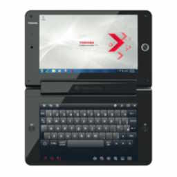

The libretto line would go on hiatus in 2002 until 2005 with the with the U100, which wouldn't last long either.
The Libretto line was formally revived in 2010 as part of the 25th anniversary of the portable computer division of the company. The line only had one computer, the W100. The line sold out quickly and was discontinued quickly too.
| Photo | Machine | Year Of Introduction | CPU | RAM | Hard Drive | Modem/Networking | Cache | Sound Card | GPU | Bundled Operating System | Bundled Software | Official Specs Sheet (May not work on old browsers) | Notes |
|---|---|---|---|---|---|---|---|---|---|---|---|---|---|
| U100 | 2005 | Intel Pentium M ULV 733 (1.10GHz) | 512MB (PC2700 DDR) 1GB (PC2700 DDR) |
60GB (4200RPM) | V.92 56K Data/Fax Modem 10/100 integrated Ethernet LAN, Atheros Wireless LAN (802.11g) |
2MB L2 | AC-Link Software Sound | Intel 855GME | Microsoft Windows XP Home Edition Toshiba Express Media Player (Quickboot operating system for basic media consumption) |
|
|||
|  | W100 | 2010 | Intel Pentium U5400(CULV, Dual Core, 1.20GHz) | 2GB | 62GB (SSD) | WiMAX wireless communication module | 3MB Intel Smart Cache | Unknown | Unknown | Microsoft Windows 7 Home Premium | Unknown | Press release |